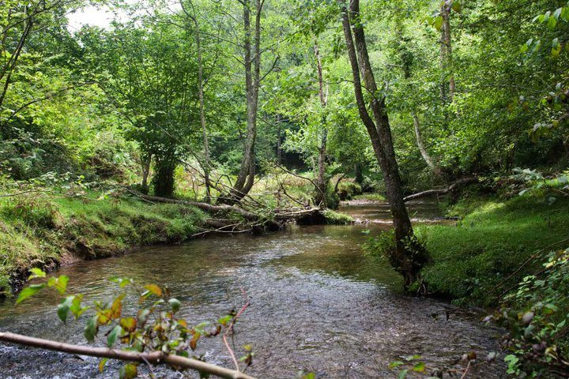

Actividades
- Salida a un entorno fluvial, donde observar un río y comprobar su estado, así como si es posible ver peces.
- Si es posible, visita a una piscifactoría para observar la cría de alevines y la suelta al río de algunos de ellos.
- Organizar con el AMPA del colegio una actividad para ir a un paseo fluvial y retirar la basura que observemos.
